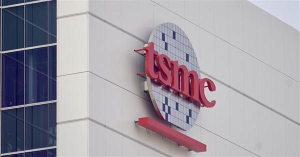
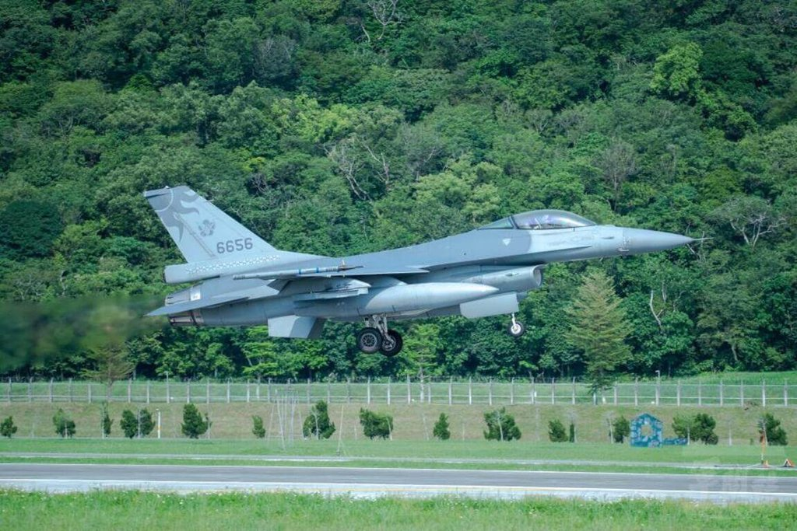
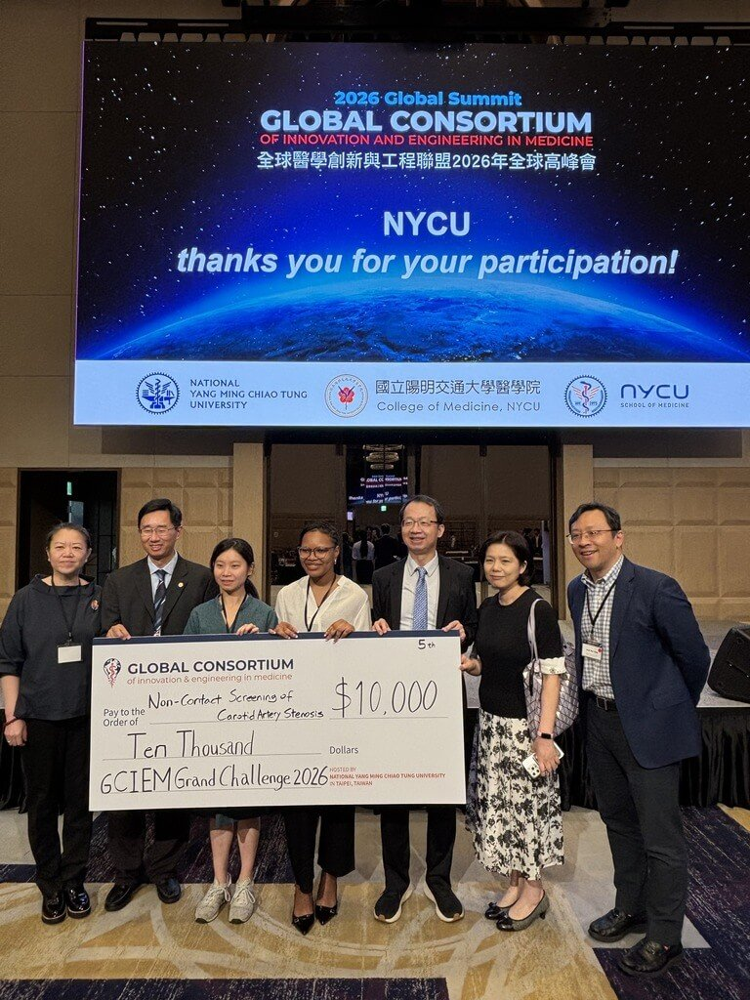

TSMC impulsa con fuerza los procesos de 2 nanómetros y más avanzados, manteniendo sus raíces en Taiwán y expandiéndose. Se prevé que la producción en masa de 2 nanómetros comience en el cuarto trimestre de 2025. El proceso N2P también entrará en producción en masa en el segundo semestre de este año. El proceso A16, que utiliza Super Power Rail (SPR), también tiene previsto iniciar su producción en masa en el segundo semestre de este año. En cuanto al proceso avanzado A14 (1,4 nanómetros), la planta A14 del Parque Científico Central de Taiwán (Central Taiwan Science Park) ya ha solicitado el inicio de las obras en octubre de 2025, y se espera que la producción en masa comience en el segundo semestre de 2028. Las plantas de obleas 20 de Hsinchu Baoshan y 22 de Kaohsiung son bases importantes para la producción en masa de 2 nanómetros, y también se están realizando activamente planes para los procesos A16 y A14. Se espera que la construcción de la planta de obleas 25 de Taichung comience a finales de 2025, centrándose principalmente en procesos avanzados por debajo de los 2 nanómetros, y no se descarta la planificación del proceso avanzado A10 (1 nanómetro). También se construirá una nueva planta en el Parque Científico de Tainan, cuya construcción está prevista para este año y se completará en 2028. TSMC continúa expandiendo los procesos avanzados en su planta de Arizona, Estados Unidos. Se espera que la segunda planta entre en producción en masa en el segundo semestre de 2027, la tercera planta ya está en construcción y se planea construir una cuarta planta y una planta de empaquetado avanzado.
閱讀全文
